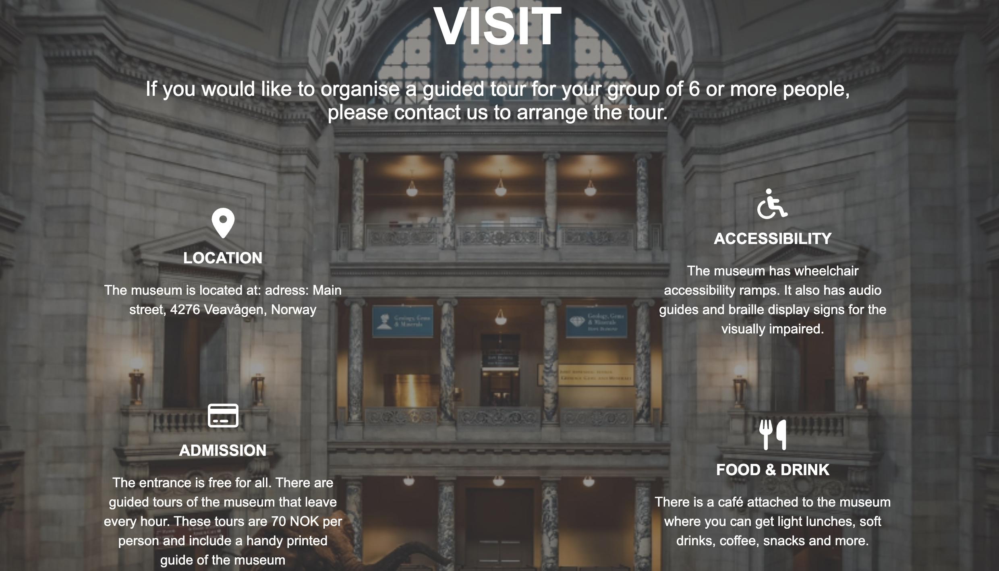
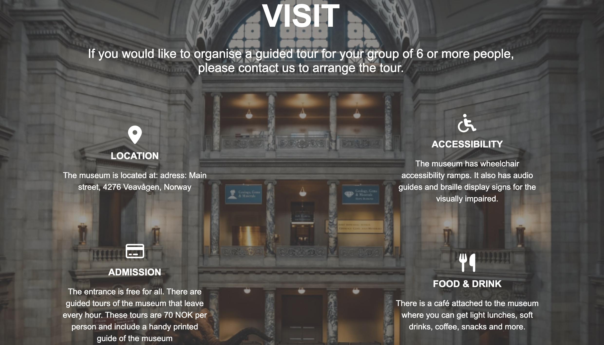

Discovery Lab
Reflecting on this project brings back a mix of excitement and amusement. Discovery Labs was my semester project at Noroff and marked an important step in my journey as a front-end developer. It wasn't just about writing code; it was about creating something that could engage and educate. Discovery Labs is a website designed to inspire curiosity and learning in science and technology. It serves as an interactive platform where users can explore various scientific experiments and technological innovations. This project was a step up from my first project, Rainy Days, and it challenged me to apply more advanced concepts and skills. Creating Discovery Labs was both intense and rewarding. It felt like building a more complex piece, where each line of code added a new layer of functionality. Looking back, I can see how much I've learned since my first project. There are still things I would refine and improve, but this project showcases my progress and growing passion for web development and UX/UI design. Feel free to get in touch if you have any questions or feedback about Discovery Labs. I'm always open to new ideas and opportunities to learn and grow. Click one of the buttons below!
Here are some screenshots from the live page
.png) 
